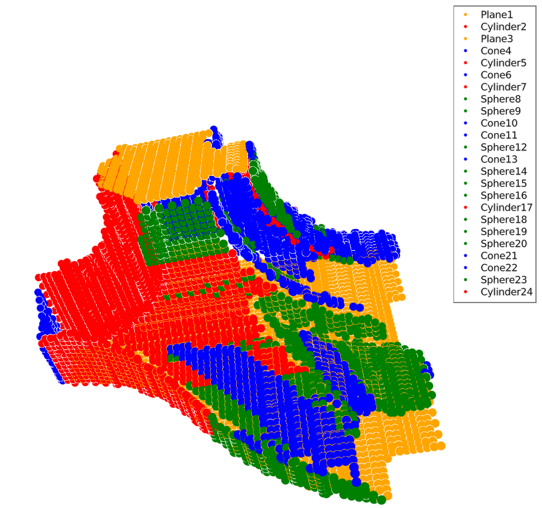
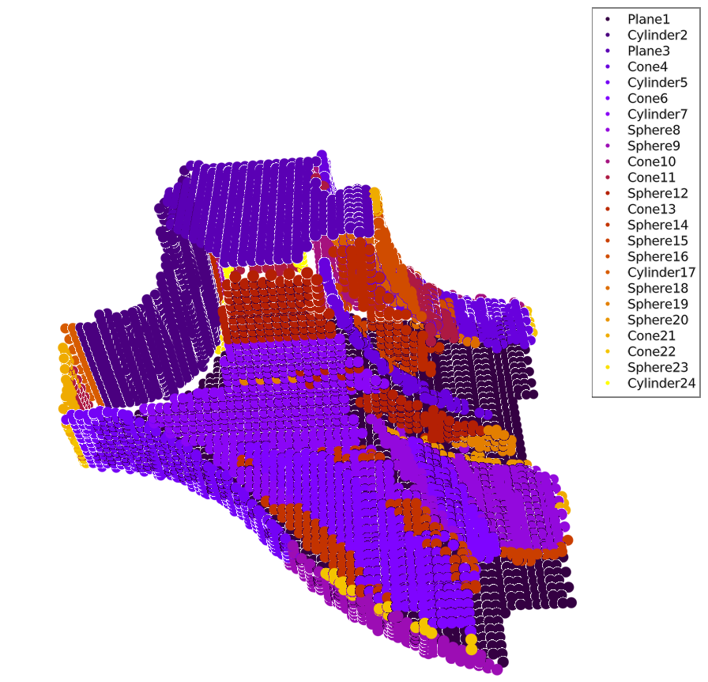

RANSACVisualizer.jl
The goal of RANSACVisualizer.jl is to provide some basic methods to visualize point clouds and the results of the RANSAC algorithm runs, based on RANSAC.jl, while separating dependencies that have impact on loading times. Makie.jl is used to achieve these goals. See its docs for examples.
Plot a point cloud with surface normals
showgeometry() plots he points and also the surface normals.
RANSACVisualizer.showgeometry — Functionshowgeometry(m; arrow = 0.5, kwargs...)Show a pointcloud with normals, represented by a HomogenousMesh from GeometryTpes.jl. kwargs...are passed to scatter() in the function.
showgeometry(vs, ns; arrow = 0.5, kwargs...)Show a pointcloud with normals, defined by the vector of points and according surface normals.
RANSACVisualizer.showgeometry! — Functionshowgeometry!(scene, vs, ns; arrow = 0.5, kwargs...)Show a pointcloud with normals, defined by the vector of points and according surface normals.
Adds the new cloud to scene. kwargs...are passed to scatter() in the function.
showgeometry!(scene, m; arrow = 0.5, kwargs...)Show a pointcloud with normals, represented by a HomogenousMesh from GeometryTpes.jl.
Adds the new cloud to scene. kwargs...are passed to scatter() in the function.
The result should look something like this:

Color the result according to the primitives type
Based on a PointCloud and an array of ScoredShapes, plot the points and color them according to their type.
RANSACVisualizer.showbytype — Functionshowbytype(pointcloud, candidateA, plotleg=true; kwargs...)Plot to a new scene. See showbytype!.
RANSACVisualizer.showbytype! — Functionshowbytype!(s, pointcloud, candidateA, plotleg=true; kwargs...)Plot the candidates and color them based on their type.
Arguments
s::Scene: Makie scene.pointcloud::PointCloud: a pointcloud from RANSAC.jlcandidateA::Vector{ScoredShape}: an array of primitives.plotleg::Bool: plot a legend?kwargs...: any keyword argument can be passed toscatter()in the function.
You should see something similar: 
Color the primitives randomly
Plot the result of a run, but color every primitive differently. Currently ColorSchemes.gnuplot is sampled from beginning to the end by the number of primitives.
RANSACVisualizer.showshapes — Functionshowshapes(pointcloud, candidateA; plotleg=true, kwargs...)Plot to a new scene. See showshapes!.
RANSACVisualizer.showshapes! — Functionshowshapes!(s, pointcloud, candidateA; plotleg=true, texts=nothing, kwargs...)Plot the candidates and color each one differently.
Arguments
s::Scene: Makie scene.pointcloud::PointCloud: a pointcloud from RANSAC.jlcandidateA::Vector{ScoredShape}: an array of primitives.plotleg::Bool: plot a legend?texts::Union{nothing,Vector{String}}: whennothingis passed (andplotleg==true), a default legend is generated.kwargs...: any keyword argument can be passed toscatter()in the function.
This should result in something similar: 